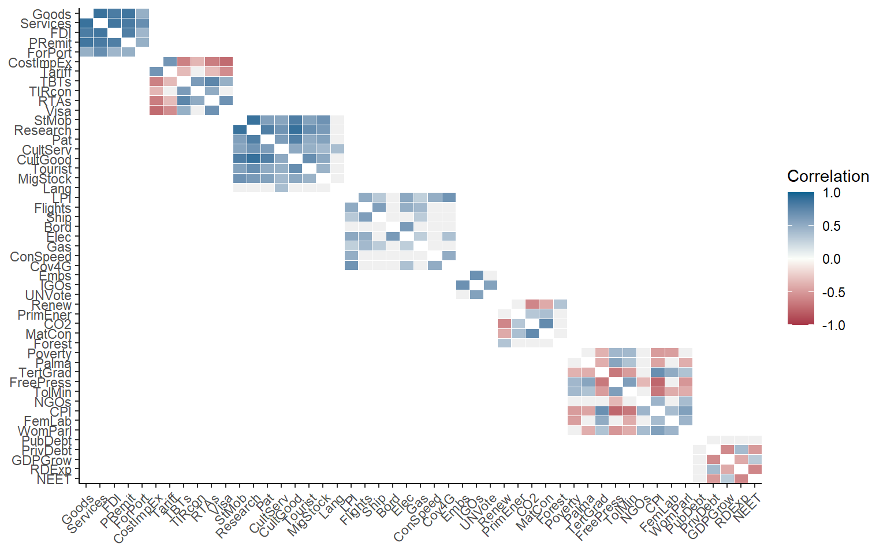
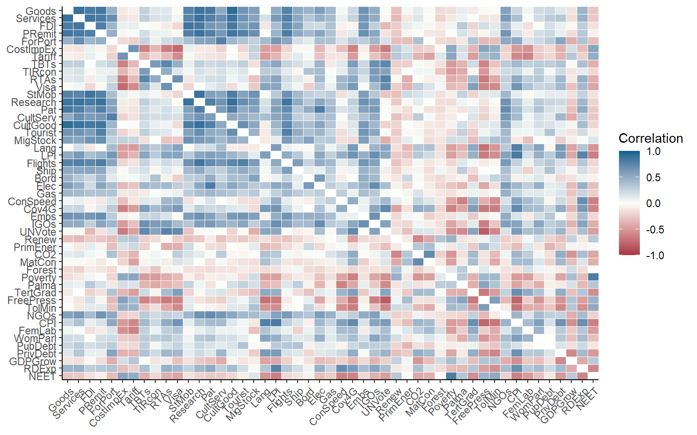
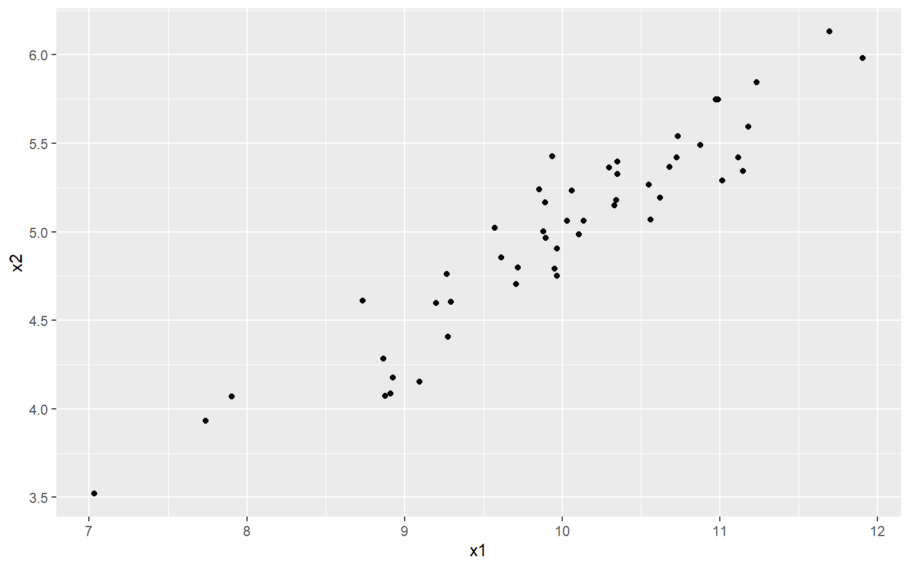

Chapter 5 Multivariate analysis
Correlations, and other relationships between indicators, can help to understand the structure of the data and to see whether indicators are redundant or are mistakenly encoded.
5.1 Correlations
Correlations are a measure of statistical dependence between one variable and another. Often, what is meant by “correlation,” is the Pearson correlation coefficient, which is a measure of linear dependence between two variables.
It’s worth spending a moment to consider what this the implication of the “linear” part actually means. Consider the following example:
# numbers in [-1, 1]
x1 <- seq(-1, 1, 0.1)
# x2 is a function of x1
x2 <- x1^2
# plot
library(ggplot2)
qplot(x1, x2)
Now, clearly there is a very strong relationship between x1 and x2. In fact, x2 is completely dependent on x2 (there are no other variables or noise that control its values). So what happens if we check the correlation?
cor(x1, x2, method = "pearson")
## [1] 1.216307e-16We end up with a correlation of zero. This is because although there is a very strong nonlinear relationship between \(x_1\) and \(x_2\), the linear relationship is zero. This is made even clearer when we fit a linear regression:
qplot(x1, x2) +
geom_smooth(method=lm, # Add linear regression line
se=FALSE) # Don't add shaded confidence region
## `geom_smooth()` using formula 'y ~ x'Obviously, this is a very contrived example, and it is unlikely you will see a relationship like this in real indicator data. However the point is that sometimes, linear measures of dependence don’t tell the whole story.
That said, relationships between indicators can often turn out to be fairly linear. Exceptions arise when indicators are highly skewed, for example. In these cases, a good alternative is to turn to rank correlation measures. Two well-known such measures are the Spearman rank correlation and the Kendall rank correlation. Rank correlations can handle nonlinearity as long as the relationship is monotonic. You could also argue that since the focus of composite indicators is often on ranks, rank correlation also makes sense on a conceptual level.
COINr offers a few ways to check correlations that are more convenient than stats::cor(). The first is to call the getStats() function that was already mentioned in Initial visualisation and analysis. This can be pointed at any data set and indicator subset and will give correlation between all indicators present. For example, taking the raw data of our example data set:
library(COINr)
# shortcut to build ASEM COIN
ASEM <- build_ASEM()
# get statistics of raw data set
statlist <- getStats(ASEM, dset = "Raw", out2 = "list")
# see a bit of correlation matrix
statlist$Correlations[1:5, 1:5]
## IndCode Goods Services FDI PRemit
## 1 Goods NA 0.8886729 0.8236043 0.8580885
## 2 Services 0.8886729 NA 0.8567035 0.8322828
## 3 FDI 0.8236043 0.8567035 NA 0.8009064
## 4 PRemit 0.8580885 0.8322828 0.8009064 NA
## 5 ForPort 0.4750653 0.6955028 0.4366541 0.4837038
# see a bit of correlations with denominators
statlist$DenomCorrelations[, 1:5]
## Denominator Goods Services FDI PRemit
## 1 Den_Area 0.2473558 0.2071061 0.3668625 0.2429470
## 2 Den_Energy 0.6276219 0.5916882 0.7405170 0.5312195
## 3 Den_GDP 0.8026770 0.7708846 0.8482453 0.7111943
## 4 Den_Pop 0.4158811 0.4577006 0.6529376 0.4379999The type of correlation can be changed by the cortype argument, which can be set to “pearson” or “kendall.”
The getStats() function also summarises some of this information in its output in the .$StatTable data frame:
statlist$StatTable[ c("Indicator", "Collinearity", "Neg.Correls", "Denom.correlation")] |>
head(10)
## # A tibble: 10 x 4
## Indicator Collinearity Neg.Correls Denom.correlation
## <chr> <chr> <dbl> <chr>
## 1 Goods Collinear 1 High
## 2 Services OK 1 High
## 3 FDI OK 1 High
## 4 PRemit OK 0 High
## 5 ForPort OK 6 OK
## 6 CostImpEx OK 16 OK
## 7 Tariff OK 15 OK
## 8 TBTs OK 7 OK
## 9 TIRcon OK 5 OK
## 10 RTAs OK 9 OKThis flags any indicators that have collinearity with any other indicators, or are significantly negatively correlated, or have correlations with denominators. These flags are activated based on thresholds that are inputs to the getStats() function (t_colin and t_denom).
Correlations can also be plotted using the plotCorr() function. This is a flexible correlation plotting function, powered by ggplot2, which is adapted to the composite indicator context. It has a number of options because there are many ways to plot correlations in a composite indicator, including within an aggregation level, between levels, selecting certain groups, focusing on parents, and so on.
To see this, here are a few examples. First, let’s plot correlations between raw indicators.
plotCorr(ASEM, dset = "Raw", aglevs = 1, showvals = F)
Here, we have plotted raw indicators against indicators. A few things to note:
- By default, if a level is plotted against itself, it only plots correlations within the groups of the next aggregation level above. Use the
grouplevargument to control the grouping or disable. - Insignificant correlations (at 5% level) are coloured grey by default. Use the
pvalargument to change the significance threshold or to disable.
We can repeat the same plot with some variations. First, grouping by sub-index:
plotCorr(ASEM, dset = "Raw", aglevs = 1, showvals = F, grouplev = 3)This gives more information, but the first level of aggregation is not easily visible. To improve it, we can also draw boxes around aggregation groups at any level.
plotCorr(ASEM, dset = "Raw", aglevs = 1, showvals = F, grouplev = 3, box_level = 2)
Between grouplev and box_level, it usually possible find a plot which communicates the “important” correlations. But why focus on correlations within aggregation groups? A good reason is that when we aggregate indicators, they should ideally be moderately correlated to avoid losing too much information. This is a long discussion which is outside of the remit of this book, but if your interested you could look at this paper.
Of course, we can also plot the whole correlation matrix, and also include insignificant correlations:
plotCorr(ASEM, dset = "Raw", aglevs = 1, showvals = F, grouplev = 0, pval = 0)
It may often be more interesting to plot correlations between aggregation levels. Since there is a bit more space, we will also enable the values of the correlations using showvals = TRUE.
plotCorr(ASEM, dset = "Aggregated", aglevs = c(1,2), showvals = T)Note that again, by default the correlations are grouped with the parent level above. This is disabled by setting withparent = "none". To see correlations with all parent groups at once, we can set withparent = "family". Here, we will also call a subset of the indicators, in this case only the indicators in the Sustainability sub-index.
plotCorr(ASEM, dset = "Aggregated", aglevs = c(1,2), icodes = "Sust",
showvals = T, withparent = "family")
COINr draws rectangles around aggregation groups. The labels on the x-axis here correspond to the column names used in IndMeta.
It is also possible to switch to a discrete colour map to highlight negative, weak and collinear values.
plotCorr(ASEM, dset = "Aggregated", aglevs = c(2,3), showvals = T, withparent = "family",
flagcolours = TRUE)The thresholds for these colours can be controlled by the flagthresh argument. This type of plot helps to see at a glance where there might be a problematic indicator. There are also a number of arguments for controlling the colours of the discrete colour map, insignificant values, the box lines, and so on.
Finally, it might be useful to simply have this information as a table rather than a plot. Setting out2 to “dflong” or “dfwide” outputs a data frame in long or wide format, instead of a figure. This can be helpful for presenting the information in a report or doing custom formatting.
plotCorr(ASEM, dset = "Aggregated", aglevs = c(2,3), showvals = T, withparent = "family",
flagcolours = TRUE, out2 = "dfwide")
## # A tibble: 8 x 3
## Indicator Agg2 Agg3
## <chr> <dbl> <dbl>
## 1 ConEcFin 0.53 0.42
## 2 Instit 0.86 0.81
## 3 P2P 0.86 0.78
## 4 Physical 0.87 0.83
## 5 Political 0.64 0.68
## 6 Environ 0.48 NA
## 7 Social 0.74 0.9
## 8 SusEcFin NA NAArguably it’s not so intuitive for a function called plotCorr() to output tables, but that’s how it is for now.
If you like your correlation heatmaps interactive, COINr has another function called iplotCorr(). It functions in a similar way plotCorr(), but is designed in particular as a component of the rew8r() app and can be used in HTML documents. For a basic correlation map:
iplotCorr(ASEM, aglevs = c(2, 3))Like plotCorr(), indicators are grouped by rectangles around the groups. This might be better for small plots but can be a bit confusing when there are many elements plotted at the same time. The iplotCorr() function can also show a continuous colour scale, and values can be removed.
iplotCorr(ASEM, aglevs = c(1,2), showvals = F, flagcolours = F)Like plotCorr(), threshold values can be controlled for the discrete colour map. The function is powered by plotly, which means it can be further altered by using Plotly commands. It’s also worth pointing out that any ggplot plot (so all the static plots in COINr) can be made interactive by the plotly::ggplotly() command.
An additional tool that can be used in checking correlations is Cronbach’s alpha - this is a measure of internal consistency or “reliability” of the data, based on the strength of correlations between indicators. COINr has a simple in-built function for calculating this, which can be directed at any data set and subset of indicators as with other functions. To see the consistency of the entire raw data set:
getCronbach(ASEM, dset = "Raw")
## [1] 0.2186314Often, it may be more relevant to look at consistency within aggregation groups. For example, the indicators within the “Physical” pillar of the ASEM data set:
getCronbach(ASEM, dset = "Raw", icodes = "Physical", aglev = 1)
## [1] 0.6198804This shows that the consistency is much stronger within a sub-group. This can also apply to the aggregated data:
getCronbach(ASEM, dset = "Aggregated", icodes = "Conn", aglev = 2)
## [1] 0.7827171This shows that the consistency of the sub-pillars within the Connectivity sub-index is quite high.
5.2 PCA
Another facet of multivariate analysis is principle component analysis (PCA). PCA is used in at least two main ways in composite indicators, first to understand the structure of the data and check for latent variables (the subject of this section); and second as a weighting approach (see the chapter on Weighting).
PCA often seems to occupy an unusual niche where it’s relatively well known, but not always so well-understood. I’m not going to attempt a full explanation of PCA here, because there are many nice explanations available in books and online. However, here is a very rough guide.
The first thing to know is that PCA is based on correlations between indicators, i.e. linear relationships (see caveats of this above). PCA tries to find the linear combination of your indicators that explains the most variance. It’s a bit easier to understand this visually. Let’s consider two variables which are strongly correlated:
library(ggplot2)
# random numbers
x1 <- rnorm(50, 10, 1)
# x2 is 0.5*x1 + gaussian noise
x2 <- 0.5*x1 + rnorm(50, 0, 0.2)
#plot
qplot(x1, x2)
At the moment, each point/observation lives in a two dimensional space, i.e. it is defined by both its \(x_1\) and \(x_2\) values. But in a way, this is inefficient because actually the data more or less lives on a straight line.
What PCA does is to rotate the axes (or rotate the data, depending on which way you look at it), so that the first axis aligns itself with the “shape” or “spread” of the data, and the remaining axes are orthogonal to that. We can demonstrate this using R’s built in PCA function.
# perform PCA
PCAres <- stats::prcomp(cbind(x1, x2), scale = F, center = F)
# get rotated data
xr <- as.data.frame(PCAres$x)
# plot on principle components (set y axis to similar scale to orig data)
ggplot(xr, aes(x = -PC1, y = PC2)) +
geom_point() +
ylim(-(max(x2) - min(x2))/2, (max(x2) - min(x2))/2)If you look carefully, you can see that the data corresponds to the previous plot, but just rotated slightly, so that the direction of greatest spread (i.e. greatest variance) is aligned with the first principle component. Here, I have set the y axis to a similar scale to the previous plot to make it easier to see.
There are many reasons for doing PCA, but they often correspond to two main categories: exploratory analysis and dimension reduction. In the context of composite indicators, both of these goals are relevant.
In terms of exploratory analysis, PCA provides somewhat similar information to correlation analysis and Cronbach’s alpha. For any given set of indicators, or aggregates, we can check to see how much variance is explained by the first (few) principle component(s). If the data can be explained by a few PCs, then it suggests that there is a strong latent variable, i.e. the data is shaped something like the figure above, such that if we rotate it, we can find an axis (linear combination) which explains the data pretty well. This is quite similar to the idea of “consistency” in Cronbach’s alpha.
R has built in functions for PCA (as shown above), and there is no need to reinvent the wheel here. But COINr has a function getPCA() which makes it easier to interact with COINs, and follows the familiar COINr syntax. It serves both to give general PCA information, and to provide PCA weights for aggregation.
PCAres <- getPCA(ASEM, dset = "Aggregated", aglev = 2, out2 = "list")The getPCA() function allows you to obtain PCA weights for any aggregation level and group(s) of indicators, but we should keep a in mind a few things. First, that PCA weights are created inside groups. So, calling getPCA() with icodes = NULL performs a separate PCA for each aggregation group inside the specified level. In the example above, where aglev = 2, there are two aggregation groups - the pillars belonging to the Connectivity sub-index, and the pillars belonging to the Sustainability sub-index. This means that two PCAs were performed - one for the first group, and one for the second. In other words, by default getPCA() follows the structure of the index.
This is more evident when we examine the output:
str(PCAres, max.level = 2)
## List of 2
## $ Weights :'data.frame': 60 obs. of 3 variables:
## ..$ AgLevel: num [1:60] 1 1 1 1 1 1 1 1 1 1 ...
## ..$ Code : chr [1:60] "Goods" "Services" "FDI" "PRemit" ...
## ..$ Weight : num [1:60] 1 1 1 1 1 1 1 1 1 1 ...
## $ PCAresults:List of 2
## ..$ Conn:List of 3
## ..$ Sust:List of 3The output is .$Weights, which is a full data frame of weights with the corresponding PCA weights substituted in; and .$PCAresults which has one entry for each aggregation group in the level specified. So here, since we targeted aglev = 2, it has done a PCA for each of the two groups - Connectivity and Sustainability.
If you want to perform a PCA over all indicators/aggregates in a specified level, for example all indicators (ignoring any aggregation groups), set by_groups = FALSE.
R has built in tools for inspecting PCA. For example, we can see a summary of the results. Each of the entries in the .$PCAresults folder is a PCA object generated by stats::prcomp(), which can be fed into functions like summary():
summary(PCAres$PCAresults$Conn$PCAres)
## Importance of components:
## PC1 PC2 PC3 PC4 PC5
## Standard deviation 1.7156 1.1598 0.58897 0.46337 0.38718
## Proportion of Variance 0.5887 0.2690 0.06938 0.04294 0.02998
## Cumulative Proportion 0.5887 0.8577 0.92708 0.97002 1.00000This tells us that using the five pillars inside the Connectivity sub-index, we can explain 59% of the variance with the first principle component. This could be interpreted as a “latent variable.” In terms of composite indicators, we generally prefer to be able to explain a significant proportion of the variance with the first principle component. This is also useful information because if we now apply the weights stored in .$Weights, this would result in explaining 59% of the variance of the underlying indicators. In other words, we are passing on a decent amount of information to the sub-index.
Another way to look at PCA results is using a biplot. Again there is no need to build anything in COINr for this. You can always use base R or in this case the ggbiplot package (needs to be installed from Github):
# install ggbiplot if you don't have it
# library(devtools)
# install_github("vqv/ggbiplot")
library(ggbiplot)
## Loading required package: plyr
## Loading required package: scales
## Loading required package: grid
ggbiplot(PCAres$PCAresults$Conn$PCAres)We can make this more interesting by pulling in some information from the COIN, such as the names of units, and grouping them using one of the grouping variables we have present with the data.
ggbiplot(PCAres$PCAresults$Conn$PCAres,
labels = ASEM$Data$Aggregated$UnitCode,
groups = ASEM$Data$Aggregated$Group_EurAsia)Now this looks quite interesting: we see that the distinction between Asian and European countries is quite strong. We can also see the clustering of countries - many European countries are clustered in the upper right, except some small countries like Luxembourg, Malta and Singapore which form their own group.
We will not go any further to these results. But we will wrap it up by reminding that PCA is used in two ways here. First is exploratory analysis, which aims to understand the structure of the data and can help to pick out groups. Second is dimensionality reduction - this might be a bit less obvious, but composite indicators are really an exercise in dimensionality reduction. We begin with a large number of variables and try to condense them down into one. PCA can help to find the weights that satisfy certain properties, such as maximising variance explained.
Last but not least, consider some caveats. PCA rests on assumptions of linearity and joint-normality, which are rarely true in real indicator data. Like correlations, however, that doesn’t mean that the results are meaningless, and modest departures from linearity should still allow relevant conclusions to be drawn.